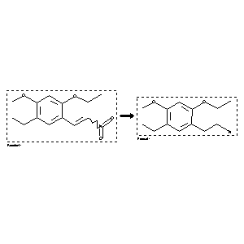

 |
| FA | RX(1); FLST(1); RX(1) |
Reaction (1 of 1)
| Reaction ID | 3663731 |
| Reactant BRN | 6725918 |
| Reactant | 2-ethoxy-4-methoxy-5-ethyl-b-nitrostyrene |
| Product BRN | 6768425 |
| Product | b-(2-ethoxy-4-methoxy-5-ethylphenyl)ethylamine |
| No. of Reaction Details | 1 |
Reaction Details (1 of 1)
| Reaction Classification | Preparation |
| Reagent | lithium aluminium hydride |
| Solvent | diethyl ether |
| Citation Pointer | 5858136; Journal; Kachroo, P. L.; Singh, C.; Gupta, Rajive; JICSAH; J.Indian Chem.Soc.; EN; 58; 1981; 1209-1211; |
Reference (1 of 1)
| Citation Number | 5858136 |
| Document Type | Journal |
| Authors | Kachroo, P. L.; Singh, C.; Gupta, Rajive |
| CODEN | JICSAH |
| Journal Title | J.Indian Chem.Soc. |
| Language Code | EN |
| (Series) Volume | 58 |
| Publication Year | 1981 |
| Page | 1209-1211 |